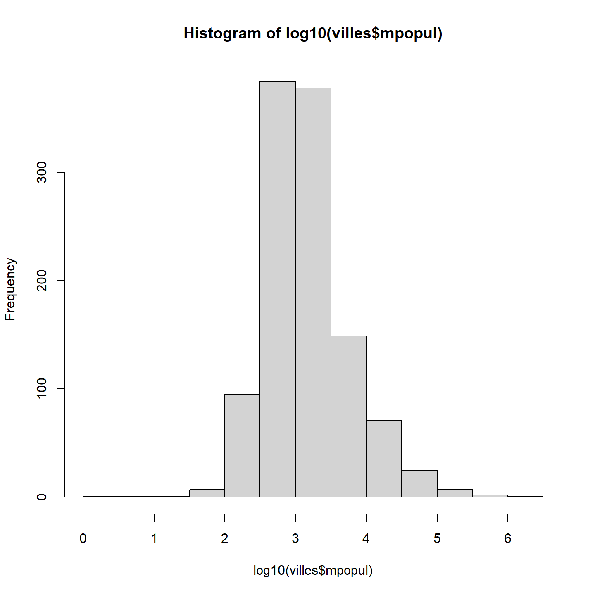
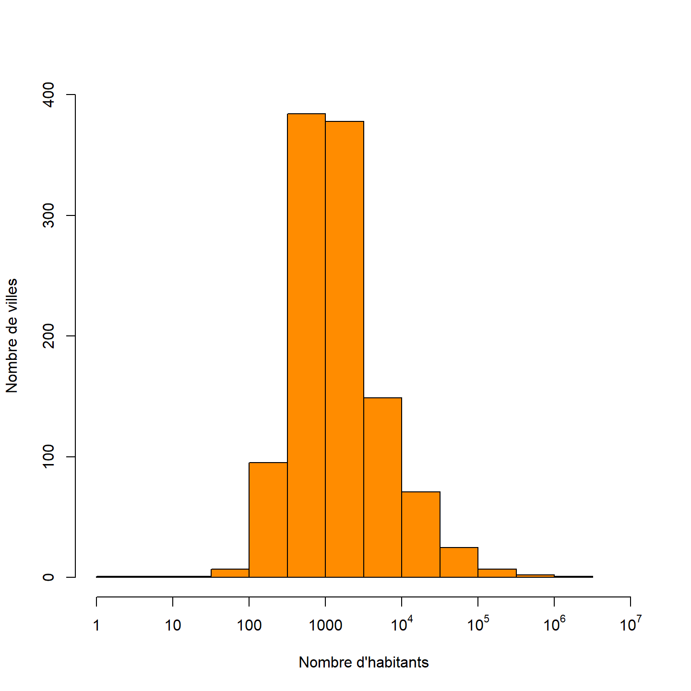
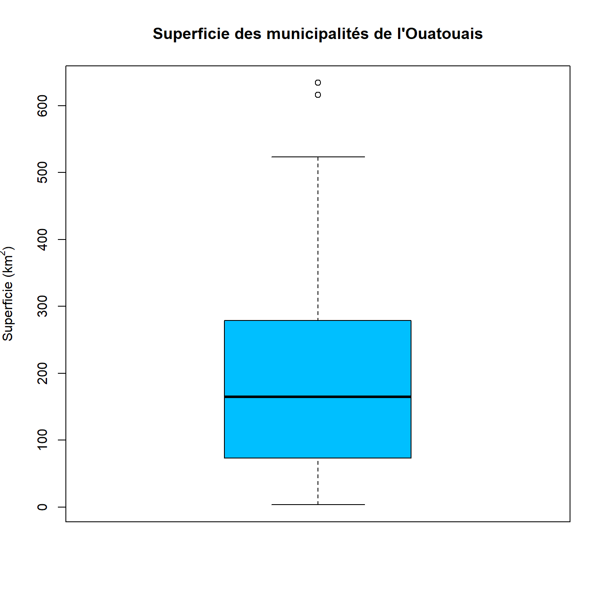
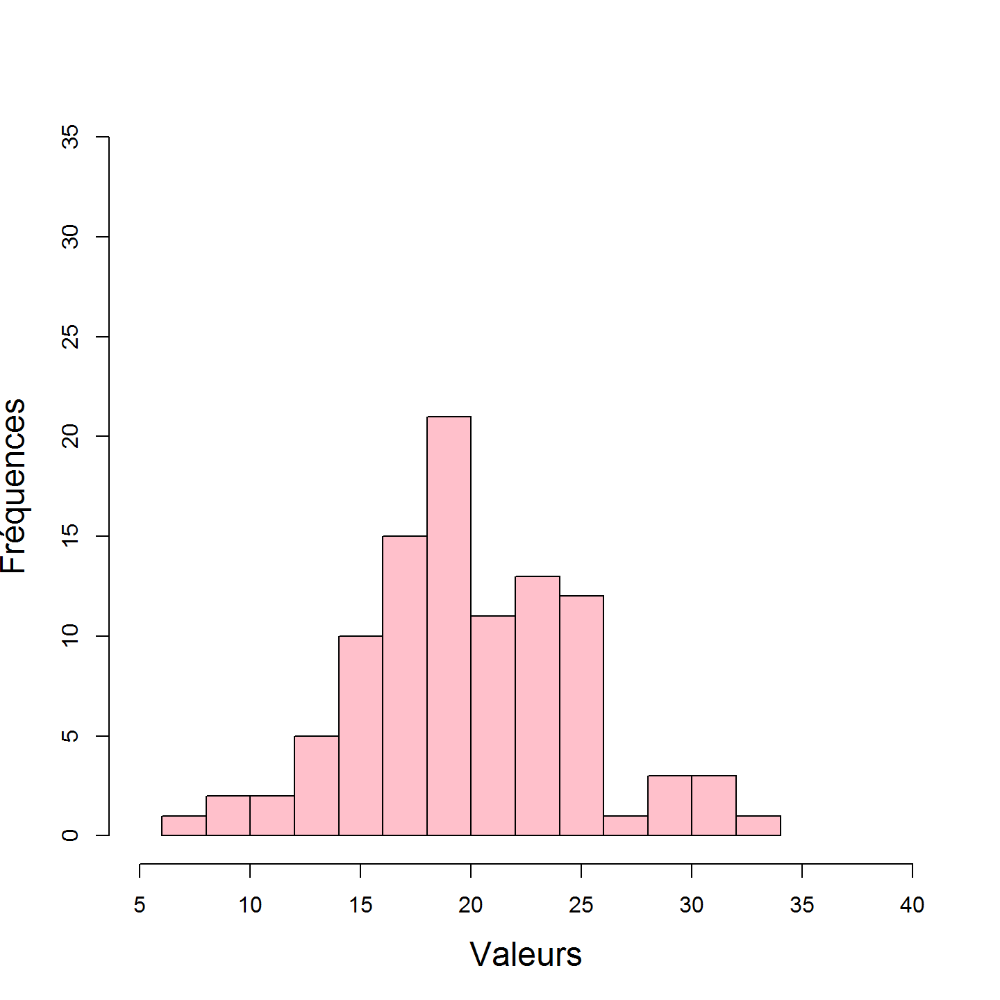
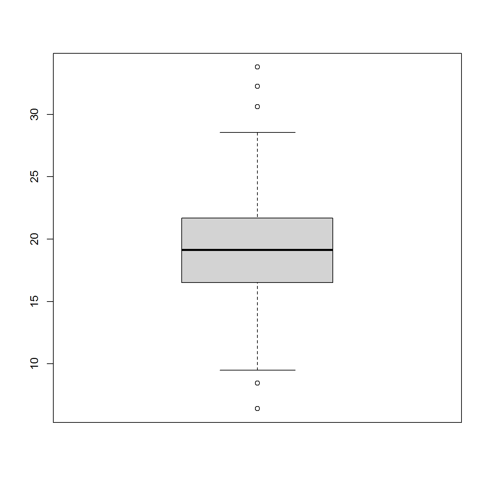

1.2 Exercices
Le cours SCI 1031 est dédié à l’apprentissage des bibliothèques et des fonctions pour manipuler, visualiser et analyser des données spatiales. Il est donc important de vous assurer de posséder les acquis de base en R pour poursuivre votre apprentissage vers des notions plus complexes.
Cette section est divisée en trois parties. Dans la partie Démarrage vous apprendrez à installer R et RStudio et vous vous familiariserez avec les notions importantes de l’environnement de travail R. Dans la partie Intro à R vous réviserez les concepts et les fonctions de base pour utiliser R. Finalement, dans la partie À vous de jouer!, vous réaliserez un exercice pour mettre en pratique les concepts enseignés.
Une grande partie du contenu de cette section est tiré du livre numérique An Introduction to R (Douglas et al. 2022).
1.2.1 Démarrage
Installer R
Nous possédez déjà R sur votre ordinateur? Nous recommandons tout de même d’installer la plus récente version afin d’avoir la version la plus à jour pour être compatible avec les bibliothèques qui seront utilisées dans le cours.
Windows
- Aller sur le site CRAN et cliquer sur le lien Download R for Windows
- Cliquer maintenant sur install R for the first time
- Cliquer sur Download R (numéro de la version) for Windows pour télécharger le fichier
*.exe - Exécuter le fichier
*.exe
MacOS
- Aller sur le site CRAN et cliquer sur le lien Download R for macOS
- Cliquer sur le lien compatible avec votre système d’opération pour télécharger le fichier
*.pkg - Double-cliquer sur le fichier
*.pkg
Installer RStudio
Vous avez déjà RStudio?
Assurez-vous d’avoir la dernière version:
- Dans la barre horizontale de votre interface RStudio, aller dans le menu déroulant Help
- Sélectionner l’option Check for Updates
- Si vous n’avez pas la version la plus à jour, celle-ci vous sera proposée.
Vous utilisez une autre plateforme que RStudio ?
Si vous préférez vraiment un autre environnement de développement que RStudio, vous pouvez bien sûr l’utiliser. Aucun apprentissage dans ce cours est dépendant de RStudio. Toutefois, si, en cours de route, vous avez des questions liées à l’environnement que vous avez choisi d’utiliser, il n’est pas certain que la personne qui vous encadre sera en mesure de vous aider.
Apprivoiser RStudio
Lorsque vous ouvrez RStudio pour la première fois, vous devriez voir une interface semblable à celle-ci (peut varier selon votre système d’exploitation):
FIGURE 1.22: Interface RStudio. Source : Douglas et al. (2022) An introduction to R: RStudio orientation.
La grande fenête à gauche est la console R. Vous pouvez y écrire des commandes R à éxécuter.
La fenêtre supérieure à droite contient les onglets Environment / History / Connections:
- Environment: contient les objets que vous avez créé ou chargez dans votre session R.
- History: contient la liste des commandes que vous avez entrées dans la console `R. Cette fenêtre peut être utile pour retrouver des commandes que vous avez précédemment utilisées.
- Connections: permet de se connecter à d’autres sources de données.
La fenêtre inférieur droite contient les onglets Files / Plots / Packages / Help / Viewer:
Files: contient la liste de tous les fichiers et les répertoires qui sont dans votre répertoire de travail (working directory) sur votre ordinateur.
Plots: contient toutes les figures crées au cours de votre session R. Vous pouvez agrandir la figure (Zoom) et la sauvegarder dans le format de votre choix (Export).
Packages: contient la liste de toutes les bibliothèques installées sur votre ordinateur. À partir de cet onglet vous pouvez installer des nouvelles bibliothèques ou mettre à jour vos bibliothèques actuelles en cliquant sur les boutons Install et Update respectivement.
Help: présente la documentation R pour une fonction recherchée.
Viewer: affiche des graphiques web générés par certaines bibliothèques.
Vous pouvez personnaliser votre inferface RStudio de multiples façons. Par exemple aller dans le menu déroulant Tool au haut de l’écran et sélectionner Global Options/Appearance pour changer les couleurs de l’écran et du lettrage. Vous n’allez quand même pas garder cet écran blanc et cette écriture monochrome pendant les 15 semaines de cours ?!
Créer un fichier R
Bien qu’il soit possible d’utiliser R en rédigeant des commandes dans la console, une meilleure habitude de travail consiste à créer un fichier R (c-à-d un fichier d’extension *.R) qui contient une série de commandes successives à exécuter.
Un fichier R permet de conserver les commandes. Ainsi, vous pourrez répéter les commandes d’une session à une autre sans devoir les retaper dans la console. Un tel fichier permet également d’ajouter des commentaires pour préciser les opérations réalisées. Finalement, un fichier R permet de partager facilement son code avec autrui.
Au cours de votre cheminement, si vous avez des questions ou des problèmes avec du code R, joignez un fichier R dans un courriel à la personne qui vous encadre. Il sera ainsi beaucoup plus facile de vous aider.
Pour créer un fichier R, aller dans le menu déroulant File au haut de l’écran et sélectionner New File/R Script:
FIGURE 1.23: Créer un fichier R. Source : Douglas et al. (2022) An introduction to R: RStudio orientation.
Remarquer qu’une nouvelle fenêtre s’ouvre en haut à gauche de l’écran (appelée le panneau Source) et que la console se trouve maintenant en bas à gauche.
Pour exécuter une ligne de code dans un fichier R, vous n’avez qu’à placer votre curseur sur la ligne désirée et cliquer sur le bouton Run. Le résultat apparaitra dans la console. Vous pouvez également utiliser le raccourci ctrl + enter sous Windows ou cmd + enter sous Mac au lieu de cliquer sur Run. Pour exécuter l’ensemble des commandes contenues dans un fichier, cliquer sur Source.
.](Module1/images/1_rstudio_run.png)
FIGURE 1.24: Utiliser un fichier R. Source : Douglas et al. (2022) An introduction to R: RStudio orientation.
Sauvegarder un fichier R en lui donnant un nom qui a du sens. Ce nom doit être sans accent et sans espace
Les bibliothèques
Une bibliothèque R, appellée “package” en anglais, est un ensemble de fonctions spécialisées créées par des experts ou des expertes dans un champ d’analyse précis.
Pour installer une bibliothèque dans R à même la console, il faut utiliser la fonction install.packages(). Par exemple, la ligne de commande suivante installe la bibliothèque mapview:
install.packages("mapview")Pour charger une bibliothèque dans une session R, il faut utiliser la fonction library(). Par exemple, vous pouvez écrire la commande suivante dans la console ou encore dans un fichier R:
library(mapview)Il faut charger une bibliothèque à toute nouvelle session R.
Le répertoire de travail
Le répertoire de travail (working directory en anglais) est le dossier par défaut dans lequel R cherche les fichiers que vous téléchargerez au cours de votre session et dans lequel R inscrit tout fichier que vous sauvegarderez.
Pour choisir un répertoire, aller dans le menu déroulant Session au haut de l’écran et sélectionner Set Working Directory/Choose Directory ….
Pour connaitre le répertoire de travail courrant, entrer la commande getwd() dans la console. Pour choisir un autre répertoire, il s’agit d’utiliser le commande setwd() en identifiant le chemin (path) vers le répertoire désiré:
setwd("C:/Users/Elise/TELUQ/SCI1031/Module4/Module4_Donnees")Vous pouvez ainsi écrire cette ligne de commande au début d’un fichier R pour préciser à R le répertoire de travail auquel le code contenu dans le fichier se rapporte.
Toutefois, ce chemin est absolu. C’est-à-dire qu’il est propre à votre ordinateur seulement et à la façon dont vous avez structuré vos dossiers. Dans la perspective où vous serez amené à partager des fichiers de code R, il est préférable d’utiliser un chemin relatif. C’est-à-dire un chemin qui pointe vers un répertoire commun aux personnes qui utiliseront le même code.
Dans le cours, les lignes de code vous invitant à lire des fichiers de données utiliseront toujours un chemin relatif. Par exemple:
donnees <- read.table("/Module4_Donnees/nz_capitales.csv", header = TRUE, sep = ",")Ce sera donc à vous de bien régler votre répertoire de travail afin que R trouve le dossier commun (Module4_Donnees pour le présent exemple).
1.2.2 Intro à R
La base
L’utilisation la plus simple qu’on peut faire de R est celle d’un calculateur. R exécute des opérations arithmétiques et une foule de fonctions mathématiques. Par exemple,
# addition
2 + 2[1] 4# multiplication
2 * 8[1] 16# R suit les conventions pour la priorité des opérations
2 * 8 - 2[1] 142 * (8 - 2)[1] 12# Le logarithme en base 2
log(2)[1] 0.6931# Le logarithme en base 10
log10(2)[1] 0.301# Le carré ou autres puissances
2^2[1] 43^8[1] 6561# La racine carrée
sqrt(16)[1] 4# pi
pi[1] 3.142Les objets
Un objet en R est n’importe quelle entrée à laquelle on assigne un nom en utilisant l’opérateur d’assignation <- . Par exemple,
mon_objet <- 10Un objet peut être un chiffre, un vecteur, une chaine de caractères, ou même une structure plus complexe comme un graphique. Tout objet créé au cours d’une session R est affiché dans l’onglet Environment de la fenêtre supérieure droite de l’interface RStudio.
Un objet est logé dans la mémoire vive et vous pouvez l’utiliser pour des opérations futures.
obj1 <- "J'aime le cours"
obj2 <- "SCI 1031"
paste(obj1, obj2)[1] "J'aime le cours SCI 1031"Les catégories de données
Dans le cadre de ce cours nous utiliserons quatre principales catégories ou classes de données supportées par R:
- Numérique (numeric en anglais) est un nombre décimal ou un nombre entier.
obj_num <- 10.3- Entier (integer): un nombre entier. Une donnée de catégorie entier ne peux jamais être décimale. Nous devons utiliser la fonction
as.integer()pour créer un entier, sans quoi R lui attribuera la catégorie numérique.
obj_ent <- as.integer(10)- Logique (logical): une donnée qui prend la valeur vrai (
TRUE) ou faux (FALSE), ou encore la valeurNAlorsque la valeur d’une donnée est manquante.
obj_log <- FALSE- Caractère (character): une chaine de un ou plusieurs caractères.
obj_car <- "Yo!"Nous utiliserons également une catégorie particulière de données de type caractère qu’on appelle des facteurs (factor). Les facteurs désignent des données catégoriques qui possèdent un ensemble connu de valeurs possibles (niveaux - levels). Nous créons des données de type facteur avec la fonction factor():
obj_fac <- factor(c("Faible", "Modéré", "Élevé"))
obj_fac[1] Faible Modéré Élevé
Levels: Élevé Faible ModéréLa fonction class() permet de connaitre la catégorie d’une données.
class(obj_num)[1] "numeric"class(obj_ent)[1] "integer"class(obj_log)[1] "logical"class(obj_car)[1] "character"class(obj_fac)[1] "factor"Les fonctions is.[nom de la catégorie]() retournent la valeur TRUE si l’objet interrogé appartient à la catégorie précisée et FALSE autrement.
is.integer(obj_num)[1] FALSEis.integer(obj_ent)[1] TRUEis.character(obj_log)[1] FALSEIl est parfois utile de changer la classe d’un objet en utilisant la fonction is.[nom de la catégorie]().
# FALSE devient "FALSE"
as.character(obj_log)[1] "FALSE"# FALSE devient 0
as.numeric(obj_log)[1] 0# 10.3 devient 10
as.integer(obj_num)[1] 10Les structures de données
En plus de différentes catégories, il existe différentes structures de données.
Les scalaires et les vecteurs
Un vecteur est une séquence de données de même catégorie. Nous définissons un vecteur par l’expression c(,) où la virgule sépare les éléments de la séquence.
# Un vecteur de catégorie numérique
vec_num <- c(9, 11, 4, 5)
# Un vecteur de catégorie caractère
vec_car <- c("bleu", "vert", "rouge")Un vecteur ne peut contenir des données de différentes catégories à l’exception d’une donnée de valeur NA qui est de catégorie logique et qui désigne l’absence de données.
# R converti les nombres en caractère pour que les éléments
# soient de même catégorie
vec_mix <- c(9, 2, "bleu")
vec_mix[1] "9" "2" "bleu"# NA conserve la catégorie des autres éléments
vec_numNA <- c(9, 2, NA)
vec_numNA[1] 9 2 NAvec_carNA <- c("bleu", NA, "rouge")
vec_carNA[1] "bleu" NA "rouge"La fonction length() donne le nombre d’éléments contenu dans un vecteur.
length(vec_num)[1] 4length(vec_car)[1] 3Une donnée scalaire est un vecteur de longueur 1.
sca <- 3833
length(sca)[1] 1Pour accéder à des éléments particuliers d’un vecteur, nous utilisons l’expression [].
a <- c( 38, 33, 45, 26)
# Le premier élément
a[1][1] 38# Le troisième élément
a[3][1] 45# Le premier et le troisième
a[c(1,3)][1] 38 45.](Module1/images/1_scal_vec.png)
FIGURE 1.25: Représentation d’un scalaire et d’un vecteur. Source : Douglas et al. (2022) An introduction to R: Data structures.
Les matrices et les arrays
Une matrice est simplement un vecteur de deux dimensions, tandis qu’un array est une matrice pouvant avoir plus de deux dimensions. Tout comme un vecteur, une matrice et un array sont formés de données d’une même classe.
.](Module1/images/1_mat_array.png)
FIGURE 1.26: Représentation d’une matrice et d’un array. Source : Douglas et al. (2022) An introduction to R: Data structures.
Nous pouvons créer une matrice avec la fonction matrix(). Dans l’exemple ci-dessous les données de 1 à 12 sont structurées dans une matrice de 4 rangées qui est remplie en suivant les rangées.
mat_ex1 <- matrix(1:12, nrow = 4, byrow = TRUE)
mat_ex1 [,1] [,2] [,3]
[1,] 1 2 3
[2,] 4 5 6
[3,] 7 8 9
[4,] 10 11 12Une matrice de structure différente mais avec les mêmes éléments.
mat_ex2 <- matrix(1:12, nrow = 2)
mat_ex2 [,1] [,2] [,3] [,4] [,5] [,6]
[1,] 1 3 5 7 9 11
[2,] 2 4 6 8 10 12Remarquer que dans cet exemple, la matrice est remplie suivant les colonnes.
Nous pouvons aussi créer une matrice en combinant des vecteurs.
vec1 <- 1:6
vec2 <- 7:12
# combinaison le long des colonnes
mat_ex3 <- cbind(vec1, vec2)
mat_ex3 vec1 vec2
[1,] 1 7
[2,] 2 8
[3,] 3 9
[4,] 4 10
[5,] 5 11
[6,] 6 12# combinaison le long des rangées
mat_ex4 <- rbind(vec1, vec2)
mat_ex4 [,1] [,2] [,3] [,4] [,5] [,6]
vec1 1 2 3 4 5 6
vec2 7 8 9 10 11 12Pour créer un array, nous pouvons utiliser la fonction array() et définir ces dimensions avec l’argument dim.
array_ex1 <- array(1:16, dim = c(2,4,2))
array_ex1, , 1
[,1] [,2] [,3] [,4]
[1,] 1 3 5 7
[2,] 2 4 6 8
, , 2
[,1] [,2] [,3] [,4]
[1,] 9 11 13 15
[2,] 10 12 14 16
Cet array est constitué de deux matrices, chacune possédant 2 rangées et 4 colonnes.
La dimension d’une matrice ou d’un array se calcule avec la fonction dim():
dim(mat_ex1)[1] 4 3dim(array_ex1)[1] 2 4 2Il est parfois utile d’attribuer des noms aux colonnes et aux rangées d’une matrice ou d’un array. Ceci est possible avec les fonctions colnames() et rownames():
colnames(mat_ex1) <- c("A","B","C")
rownames(mat_ex1) <- c("alpha", "beta", "gamma", "delta")
mat_ex1 A B C
alpha 1 2 3
beta 4 5 6
gamma 7 8 9
delta 10 11 12Pour accéder à un élément particulier d’une matrice ou d’un array nous utilisons toujours l’expression [] mais cette fois la position de l’élément dans chaque dimension doit être précisée:
# élément à la ligne 1, colonne 2
mat_ex1[1,2][1] 2# élément à la ligne 2, colonne 1, 2e matrice
array_ex1[2,1,2][1] 10Les listes
Une liste est un objet pouvant héberger des données de différentes classes. En fait, une liste peut également héberger des données de différentes structures. Nous définissons une liste par la fonction list() où chaque objet de la liste est séparé par une virgule. Voici un exemple:
list_ex1 <- list( matrix(1:6, nrow = 3),
c("bleu", "vert", "rouge"),
c(FALSE, TRUE, FALSE, TRUE, FALSE))
list_ex1[[1]]
[,1] [,2]
[1,] 1 4
[2,] 2 5
[3,] 3 6
[[2]]
[1] "bleu" "vert" "rouge"
[[3]]
[1] FALSE TRUE FALSE TRUE FALSENous pouvons assigner des noms à chaque objet de la liste en utilisant la fonction names():
names(list_ex1) <- c("quantite", "couleur", "resultat")
list_ex1$quantite
[,1] [,2]
[1,] 1 4
[2,] 2 5
[3,] 3 6
$couleur
[1] "bleu" "vert" "rouge"
$resultat
[1] FALSE TRUE FALSE TRUE FALSEOu encore au moment de définir la liste:
list_ex2 <- list( frequence = matrix(1:6, nrow = 3),
saveur = c("bleu", "vert", "rouge"),
verification = c(FALSE, TRUE, FALSE, TRUE, FALSE))
list_ex2$frequence
[,1] [,2]
[1,] 1 4
[2,] 2 5
[3,] 3 6
$saveur
[1] "bleu" "vert" "rouge"
$verification
[1] FALSE TRUE FALSE TRUE FALSEPour accéder à un objet de la liste, nous devons utiliser l’expression [[]], ou encore son nom précédé du symbole $.
# Premier objet
list_ex1[[1]] [,1] [,2]
[1,] 1 4
[2,] 2 5
[3,] 3 6# objet couleur
list_ex1$couleur[1] "bleu" "vert" "rouge"Pour accéder à un élément particulier de la liste, il faut d’abord préciser sa position dans la liste, puis sa position dans l’objet.
# Element sur la 3e ligne, 2e colonne du premier objet
list_ex1[[1]][3,2][1] 6# Element 2 de l'objet couleur
list_ex1$couleur[2][1] "vert"Les data frames
Un data frame est un tableau de données à deux dimensions, semblable à une matrice, mais pouvant contenir des données de différentes classes. Généralement chaque ligne du tableau correspond à une observation et chaque colonne à une variable mesurée. Les data frames sont similaires à un tableau Excel. Ils peuvent aussi être perçus comme une combinaison de vecteurs de même longueur.
Nous pouvons créer un data frame en utisant la fonction data.frame():
tab_ex1 <- data.frame(voiture = 1:5,
marque = c("Hyundai", "Ford", "Toyota", "Hyundai", "Subaru"),
couleur = c("Gris", "Rouge", "Bleu", "Noir", "Gris"))
tab_ex1 voiture marque couleur
1 1 Hyundai Gris
2 2 Ford Rouge
3 3 Toyota Bleu
4 4 Hyundai Noir
5 5 Subaru GrisOu encore:
nom <- c("Price", "Suzuki", "Gallagher", "Caufield", "Hoffman", "Dvorak", "Romanov")
prenom <- c("Carey", "Nick", "Brendan", "Cole", "Mike", "Christian","Alexander")
numero <- c("31","14","11","22","68","28","27")
age <- c(34,22,29,21, 32, 26, 22)
position <- factor(c("Gardien", "Centre", "Ailier droit",
"Ailier droit", "Centre","Ailier gauche", "Défenseur droit" ))
buts <- c(NA, 19, 6,22, 11, 10, 3)
tab_ex2 <- data.frame(nom, prenom, numero, age, position, buts)
tab_ex2 nom prenom numero age position buts
1 Price Carey 31 34 Gardien NA
2 Suzuki Nick 14 22 Centre 19
3 Gallagher Brendan 11 29 Ailier droit 6
4 Caufield Cole 22 21 Ailier droit 22
5 Hoffman Mike 68 32 Centre 11
6 Dvorak Christian 28 26 Ailier gauche 10
7 Romanov Alexander 27 22 Défenseur droit 3Nous pouvons accéder à une colonne particulière d’un data frame en utilisant l’expression [, n] où n est la position de la colonne ou en utilisant le nom de la colonne précédé du symbole $:
tab_ex2[,3][1] "31" "14" "11" "22" "68" "28" "27"tab_ex2$numero[1] "31" "14" "11" "22" "68" "28" "27"Pour accéder à une ligne particulière d’un data frame, nous pouvons utiliser l’expression [m, ] où m est la position de la ligne
tab_ex2[4,] nom prenom numero age position buts
4 Caufield Cole 22 21 Ailier droit 22La fonction str() donne un résumé de la structure d’un data frame (le nom des variables, la classe des données, et leur valeur):
str(tab_ex2)'data.frame': 7 obs. of 6 variables:
$ nom : chr "Price" "Suzuki" "Gallagher" "Caufield" ...
$ prenom : chr "Carey" "Nick" "Brendan" "Cole" ...
$ numero : chr "31" "14" "11" "22" ...
$ age : num 34 22 29 21 32 26 22
$ position: Factor w/ 5 levels "Ailier droit",..: 5 3 1 1 3 2 4
$ buts : num NA 19 6 22 11 10 3Parfois les data frame peuvent contenir beaucoup de variables et d’observations. Dans ces situations, il peut être utile d’utiliser les fonctions head() ou tail() qui retournent les 5 premières et les 5 dernières lignes du tableau respectivement.
head(tab_ex2) nom prenom numero age position buts
1 Price Carey 31 34 Gardien NA
2 Suzuki Nick 14 22 Centre 19
3 Gallagher Brendan 11 29 Ailier droit 6
4 Caufield Cole 22 21 Ailier droit 22
5 Hoffman Mike 68 32 Centre 11
6 Dvorak Christian 28 26 Ailier gauche 10Importer et exporter des données
Importer des données
Dans le cadre de ce cours, vous serez amené à importer des fichiers de données en format *.txt ou *.csv. Ces deux formats peuvent être importés en utilisant la fonction read.table().
Tableau <- read.table(file = "NomDuFichier.txt",
header = TRUE,
sep = "\t",
dec = ",",
na.string = "S/O",
stringsAsFactors = TRUE)La fonction read.table() peut comprendre plusieurs arguments. Entre autres:
file =, indique le nom du fichier à importer.header = TRUEouFALSEprécise si on importe ou non le nom des colonnes.sep = "\t"ou","ou""précise comment les données sont séparées dans le fichier d’origine (où\tdésigne la touche de tabulation (tab)).dec = ","ou"."précise comment la décimale est représentée dans le fichier d’orgine (p. ex. en français nous utilisons la virgule).na.string =précise le symbole utilisé pour désigner les valeurs NA (p.ex. en français nous utilisons souvent l’expression “S/O” qui signifie sans objet)stringsAsFactors = TRUEouFALSEprécise si les données de classe caractère sont importées en classe facteur.
D’autres fonctions similaires facilitent l’importation de fichiers *.csv. Ces fonctions sont des variantes de la fonction read.table() qui incluent certaines combinaisons d’arguments par défaut.
# Importer un fichier csv
Tableau <- read.csv(file = "NomDuFichier.csv")
# Importer un fichier csv avec dec = "," et sep = ";"
Tableau <- read.csv2(file = "NomDuFichier.csv")
# Importer un fichier avec sep = "\t"
Tableau <- read.delim(file = "NomDuFichier.txt")Dans les modules futurs, nous verrons les fonctions R permettant d’importer des fichiers de données spatiales de différents formats.
Exporter des données
Similairement à la fonction read.table() pour lire les données, R dispose de la fonction write.table() pour exporter des données. Par exemple, nous pouvons exporter le data frame tab_ex2 dans un fichier *.txt:
write.table(tab_ex2, file = "JoueursCanadiens.txt",
col.names = TRUE,
row.names = FALSE,
sep = "\t")Ou en format *.csv:
write.table(tab_ex2, file = "JoueursCanadiens.csv",
col.names = TRUE,
row.names = FALSE,
sep = ",")Nous pouvons également utiliser la fonction write.csv() pour exporter les données en format *csv
write.csv(tab_ex1, file = "voitures.csv", row.names = FALSE)
Dans ce cas, il n’est pas nécessaire les arguments col.names = TRUE et sep = "," sont pris par défaut, et il n’est donc pas nécessaire de les préciser.
Graphiques de base
Diagramme de dispersion
Nous utilisons la fonction plot() pour représenter une variable y en fonction d’une variable x:
x <- 1:10
y <- x^2
plot(x,y)
Il est possible d’ajouter des arguments pour préciser:
- le nom des axes:
xlabetylab - les limites des axes:
xlimetylim - le titre:
main - la façon de lier les points:
type - l’épaisseur du trait:
lwd - le style du trait:
lty - le style des points:
pch - la taille des points:
cex - la couleur des points:
col - et autres!
FIGURE 1.27: Quelques arguments de la fonction plot() et les valeurs possibles. Source : The R Graph Gallery.
Personnalisons le graphique précédent en ajoutant des arguments:
plot(x,y,
main = "Croissance incroyable de ma plante",
xlab = "Jours",
ylab = "Taille (cm)",
cex.lab = 1.5,
xlim = c(0, 12),
ylim = c(0, 120),
type = "b",
lty = 3,
lwd = 1,
pch = 16,
col = "blue",
cex = 0.9)
1.2.2.0.1 Histogramme
Nous utilisons la fonction hist() pour produire un histogramme qui illustre le nombre ou la fréquence d’observation qui ont une certaines valeurs.
# générer 20 nombres aléatoires à partir d'une
# distribution normale de moyenne 20 et de distribution standard 5
x <- rnorm(100, mean = 20, sd = 5)
# histogramme
hist(x)
Comme pour la fonction plot(), nous pouvons améliorer l’apparence de l’histogramme par l’ajout d’arguments.
hist(x,
breaks = 10,
main = "",
xlab = "Valeurs",
ylab = "Fréquences",
cex.lab = 1.5,
col = "pink",
xlim = c(5, 40),
ylim = c(0, 35))
L’argument breaks permet de réduire ou d’augmenter le nombre de bandes dans le diagramme. Le nombre de bandes ne sera probablement pas la valeur exacte que vous précisez mais respectera l’ordre de grandeur.
Diagramme à boîtes
Nous utilisons la fonction boxplot() pour créer un diagramme à boîtes (aussi appelé diagramme à moustaches). Un diagramme à boîtes est une bonne façon de voir comment les données sont distribuées autour de leur valeur médiane.
# générer 20 nombres aléatoires à partir d'une
# distribution normale de moyenne 20 et de distribution standard 5
x <- rnorm(100, mean = 20, sd = 5)
# histogramme
boxplot(x)
Le trait horizonal foncé au centre correspond à la valeur médiane. La ligne supérieure de la boîte correspond au 75ième percentile (3ième quartile) et la ligne inférieure de la boîte au 25ième percentile (1er quartile)
Comme pour les autres types de graphique, nous pouvons personnaliser les diagrammes à boîtes en ajoutant des arguments à la fonction boxplot()
boxplot(tab_ex2$age,
ylab = "Âge des joueurs",
ylim = c(19, 36),
col = "violet",
cex.lab = 1.5
)
1.2.3 À vous de jouer!
Dans cette section, vous allez mettre en pratique les concepts enseignés en utilisant des données sur les municipalités du Québec qui proviennent du répertoire des municipalités du Québec. Bien que la réponse à chaque question soit disponible, il est très important de tenter d’y répondre par vous même!
Télécharger le dossier Module1_donnees.zip dans votre répertoire de travail pour ce module, et dézippez-le. Le dossier contient le fichier villes_qc.csv.
Question 1
a) Utiliser la fonction read.csv pour importer les données dans votre session de travail R. Nommer l’objet importer villes.
Réponse
villes <- read.csv("Module1/Module1_donnees/villes_qc.csv")b) Quelles sont les dimensions du data frame villes et comment se nomment ses attributs (c’est-à-dire le nom de ses colonnes)?
Réponse
Les dimensions sont données par la fonction dim()
dim(villes)[1] 1131 4Le nom des attributs est donné par la fonction names()
names(villes)[1] "munnom" "regadm" "mpopul" "msuperf"Ces attributs correspondent:
- Au nom de la municipalité (“munnom”).
- À la région administrative d’attache de la municipalité (“regadm”).
- À la taille de la population de la municipalité en 2021 (“mpopul”).
- À la superficie de la municipalité en km2 (“msuperf”).
c) Utiliser la fonction str() pour produire un résumé du contenu du data frame villes. Déterminer à quelle classe appartient chaque attribut.
Réponse
str(villes)'data.frame': 1131 obs. of 4 variables:
$ munnom : chr "Abercorn" "Acton Vale" "Adstock" "Aguanish" ...
$ regadm : chr "Montérégie (16)" "Montérégie (16)" "Chaudière-Appalaches (12)" "Côte-Nord (09)" ...
$ mpopul : int 344 7733 2768 238 678 2232 227 172 30831 1459 ...
$ msuperf: num 27 91.1 306.2 680.6 82.3 ...Nous constatons que “munnom” et “regadm” sont de classe caractère (char), “mpopul” de classe nombre entier (int), et “msuperf” de classe numérique (num).
d) Transformer l’attribut “regadm” en facteur et déterminer son nombre de niveaux.
Réponse
La fonction as.factor() permet de transformer un attribut en classe facteur.
villes$regadm <- as.factor(villes$regadm)Le nombre de niveau d’un objet de classe facteur est donné par la fonction levels().
levels(villes$regadm) [1] "Abitibi-Témiscamingue (08)"
[2] "Bas-Saint-Laurent (01)"
[3] "Capitale-Nationale (03)"
[4] "Centre-du-Québec (17)"
[5] "Chaudière-Appalaches (12)"
[6] "Côte-Nord (09)"
[7] "Estrie (05)"
[8] "Gaspésie--Îles-de-la-Madeleine (11)"
[9] "Lanaudière (14)"
[10] "Laurentides (15)"
[11] "Laval (13)"
[12] "Mauricie (04)"
[13] "Montérégie (16)"
[14] "Montréal (06)"
[15] "Nord-du-Québec (10)"
[16] "Outaouais (07)"
[17] "Saguenay--Lac-Saint-Jean (02)"
Nous observons qu’il y a 17 niveaux correspondants à chacune des régions administratives du Québec.
Question 2
a) Créer l’objet Mtl qui contient seulement les entrées du data frame villes pour la municipalité de Montréal.
Réponse
Nous souhaitons créer un data frame comprenant seulement la ligne de villes pour laquelle l’attribut “munnon” prend la valeur “Montréal”.
Mtl <- villes[villes$munnom=="Montréal",]
Mtl munnom regadm mpopul msuperf
409 Montréal Montréal (06) 1801546 431.7Remarquer que l’expression villes$munnom=="Montréal" est un vecteur logique qui prend la valeur vrai (TRUE) lorsque le nom de municipalité est Montréal, et la valeur faux (FALSE) dans le cas contraire (c’est-à-dire pour les 1130 autres municipalités)
length(villes$munnom=="Montréal")[1] 1131class(villes$munnom=="Montréal")[1] "logical"b) Créer l’objet villes_Outaouais qui contient les entrées du data frame villes pour toutes les municipalités de la région administrative de l’Ouatouais.
Réponse
Nous procédons de façon similaire à la question 2a. Nous sélectionnons toutes les lignes de villes pour lesquelles l’attribut “regadm” prend la valeur “Outaouais (07)”
villes_Outaouais <- villes[villes$regadm=="Outaouais (07)",]
head(villes_Outaouais) munnom regadm mpopul msuperf
8 Alleyn-et-Cawood Outaouais (07) 172 325.9
21 Aumond Outaouais (07) 766 227.6
60 Blue Sea Outaouais (07) 656 87.5
61 Boileau Outaouais (07) 336 140.9
65 Bois-Franc Outaouais (07) 412 74.3
72 Bouchette Outaouais (07) 667 143.2Question 3
a) Créer un histogramme de la distibution de la population des villes du Québec comprenant une dizaine de bandes. Utiliser la fonction log10() pour représenter la taille des populations. Préciser les axes de votre graphique adéquatement.
Réponse
Nous utilisons la fonction hist() avec l’argument breaks = 10 pour produire un histogramme d’environ 10 bandes.
hist(villes$mpopul, breaks = 10 )
Nous observons que la distribution de la taille des villes suit une loi de puissance. En effet, nous comptons beaucoup de villes avec une petite taille de population (plus de 1000 villes avec une population inférieure à 250 000 habitants) et peu de villes avec une très grande taille de population.
Dans cette situation, il est préférable d’illustrer le logarithme de la taille de la population. Cette distribution nous donne une meilleure appréciation de la variation dans la taille des villes.
hist(log10(villes$mpopul), breaks = 10 )
Identifions correctement les axes.
hist(log10(villes$mpopul), breaks = 10,
main = "",
xlab = "Nombre d'habitants",
ylab = "Nombre de villes",
col = "darkorange",
xlim = c(0, 7),
ylim = c(0, 400),
xaxt='n' # ceci retire le nom des ticks sur l'axe x.
)
# Pour aller un peu plus loin ...
axis(side =1 , at = 0:7,
labels = c("1","10","100","1000",
expression(10^4) , expression(10^5),
expression(10^6), expression(10^7)))
b) Créer un diagramme à boîte pour représenter la superficie des villes de la région de l’Outaouais.
Réponse
boxplot(villes_Outaouais$msuperf,
main = "Superficie des municipalités de l'Ouatouais",
ylab = expression(paste("Superficie (km"^"2",")")),
col = "deepskyblue"
)